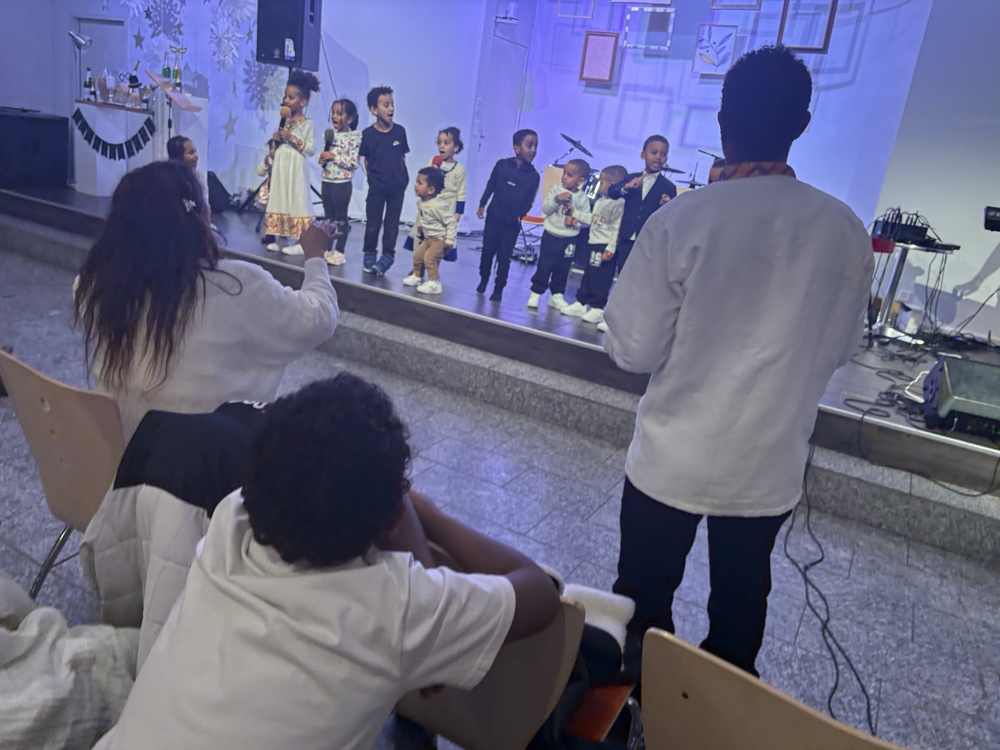

Welcome to Church of the Living God Bern
A house of grace, truth and living hope
A Christ-centered church family in Bern where people encounter God, grow in faith, and serve with love.
“Come to me, all you who are weary and burdened, and I will give you rest.”
Matthew 11:28✨ Welcome home. ✨
Jesus Christ is the same yesterday, today and forever.
Hebrews 13:8For the weary heart
You do not have to carry everything alone.
Life can be heavy. Many people arrive carrying silent burdens, sorrow, confusion or spiritual hunger. Here we want them to discover the peace of Christ, the comfort of prayer, and the beauty of a church family that walks in love.
Ministries
A place for every generation to grow and serve.
Each ministry is designed to help people know Jesus more deeply, form godly relationships, and serve with purpose.
Kids Ministry
A joyful and safe place where children learn the love of God.
Explore kidsYouth
A bold space for identity, discipleship, prayer and friendship.
Explore youthWorship
Lifting the name of Jesus with reverence, beauty and passion.
Explore worshipPrayer & Care
Standing with one another in intercession, support and encouragement.
Explore prayerSermons
Hear the Word that gives life, clarity and hope.
When Jesus Meets the Heavy Heart
A message of comfort, surrender and divine rest for weary souls.
HopeNew Mercy Every Morning
A message that calls the church to hope, renewal and trust in God.
CommunityWalking Together in Love
A message on unity, forgiveness, honour and building one another up.
This Week
Gather with us in worship, prayer and fellowship.
Create space for regular rhythms of faith: Sunday worship, prayer gatherings, Bible study and fellowship.
Pastor Message
Pastor Tekleweyni Bahta
“We desire to lead people to Jesus Christ, stand on the Word of God, and build a loving church family where faith grows and hope is renewed.”
Serving the church family in Bern with prayer, biblical teaching, pastoral care, and a heart for people of every generation.
Visit Us
Come as you are and worship with us.
Whether you are new to faith, returning to church, or simply searching for peace, you are warmly welcome at EEC Bern.
Prayer Request
Let us stand with you in faith.
Prayer is not a last resort. It is a holy invitation to bring every need before God. This form is designed to feel gentle, safe and respectful.
This Sunday
Sunday programme
A calm, clear service flow for families, ministries, worship, and room planning.
| Date | Ministry | Time | Room |
|---|---|---|---|
| 15.03.2026 | Worship Preparation | 14:00–15:20 | Room A |
| 15.03.2026 | Children’s Ministry | 14:30–15:20 | Room D |
| 15.03.2026 | Youth Gathering | 14:00–15:20 | Room B |
| 15.03.2026 | Main Worship Service | 15:30–18:30 | Main Hall |
Clean. Clear. Professional.